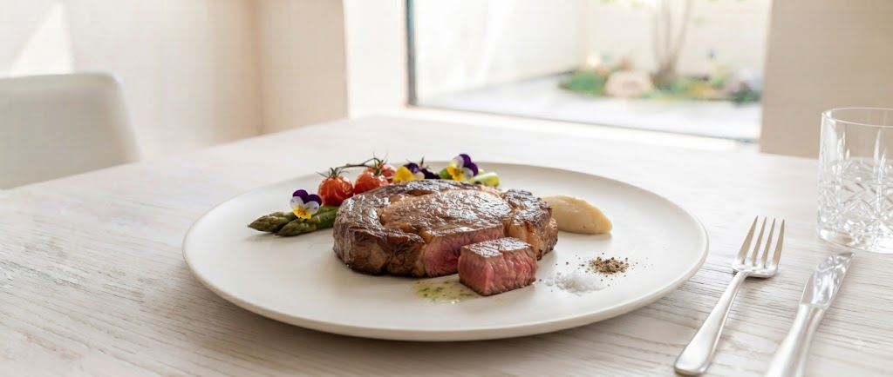

「野菜がこんなに
美味しいなんて」
旬の息吹を、
フレンチの技法で昇華する。
旭川駅直結、JRタワーホテル日航がプロデュースする至福の空間。三國シェフが追求する「地産地消」の哲学は、この北海道の地で最も鮮やかに花開きます。
海老が苦手な方も魅了する「オマール海老」の旨味、そしてメインの「高級牛リブロース」。素材への敬意を込めた、火入れの妙をご体感ください。
Cuisine Naturelle

「野菜がこんなに
美味しいなんて」
旭川駅直結、JRタワーホテル日航がプロデュースする至福の空間。三國シェフが追求する「地産地消」の哲学は、この北海道の地で最も鮮やかに花開きます。
海老が苦手な方も魅了する「オマール海老」の旨味、そしてメインの「高級牛リブロース」。素材への敬意を込めた、火入れの妙をご体感ください。
Cuisine Naturelle
お客様の声
「以前、友人と一緒に伺ったランチが忘れられず再訪しました。店内から見える景色が素晴らしく、絶景にうっとり。お肉の火入れが絶妙で、心も身体も満たされる『自分へのご褒美ランチ』でした。」
— 30代 女性 / 記念日利用
「還暦の記念に訪問。盛り付けが美しく味も極上でしたが、何よりスタッフの皆さんの接客が一流でした。言われなくてもまた行きたくなるお店です。静かでとても良い時間を過ごせました。」
— 60代 男性 / 還暦祝い
ミクニサッポロがお届けする、これまでにない美食体験。
お客様の声にお応えし、特別な新企画・サービスを順次展開いたします。
三國シェフや料理長、ソムリエと直接言葉を交わしながら、この日のためだけに創られる特別アミューズと限定ワインを立食スタイルで愉しむスペシャルナイト。
ご来店日とお名前、シェフからの自筆メッセージが印字された上質なオリジナルカードをご進呈。記念日の思い出を形としてお持ち帰りいただけます。
〒060-0005 北海道旭川市中央区北5条西2丁目5
旭川ステーブレイス センター 9階
他のエレベーターでは9階まで上がることができません。
必ず以下のルートでお越しください。
「アピア1階 スタバ並びの案内所横エレベーター」
窓際の席からは、快晴の青空、あるいは宝石を散りばめたような夜景が広がります。大切な方とのひとときを、ミクニサッポロでお過ごしください。
予約番号 011-251-0392
定休日 火曜日
24時間いつでもご予約いただけます
WEB予約・空席確認
※アレルギー対応のご相談は予約フォームの備考欄、またはお電話にて承ります。
※満席の場合でも、お電話にて調整可能な場合がございます。